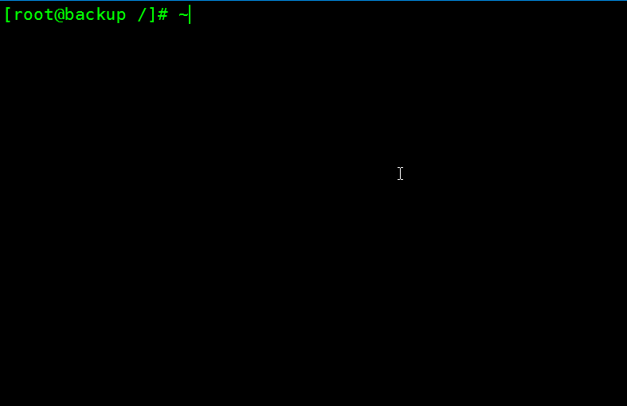
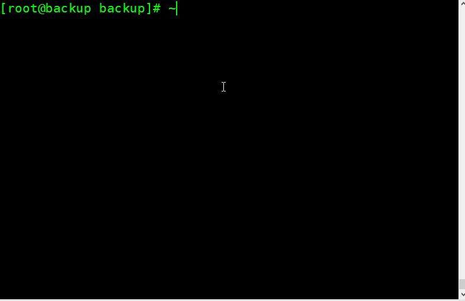

rsync的Deamon模式

检查rsync软件包是否存在
rpm -qa|grep "rsync"
编辑rsync的配置文件
vim /etc/rsyncd.conf
uid = rsync #虚拟用户 远端的命令使用rsync访问共享目录
gid = rsync
use chroot = no #安全相关
max connections = 200 #最大连接数
timeout = 300 #超时时间
pid file = /var/run/rsyncd.pid
lock file = /var/run/rsync.lock
log file = /var/log/rsyncd.log
[backup] #模块名
path = /backup #服务器提供访问的目录
ignore errors
read only = false #
list = false #不能列表
hosts allow = 172.16.1.0/24 #允许那些机器访问
hosts deny = 0.0.0.0/32
auth users = seventeenwen #虚拟用户
secrets file = /etc/rsync.password #虚拟用户的密码
uid和gid
在Linux中，所有的软件和服务想要运行起来都需要一个用户。这是rsync程序的执行用户，rsync在运行起来时的用户就是rsync。
[backup]
rsync用来存放备份的目录通过配置可以指定备份过来的文件的存放路径。
auth users && secrets file
用 来安全的验证，可以在rsync的目录下创建文件的用户和用来登录的密码
添加一个虚拟用户
根据配置文件配置uid添加一个虚拟用户，这里的这个用户只是为了运行rsync程序而设置的。没有其他任何的含义。所有客户端连接上来的操作都是在这个用户的下执行的
useradd -s /sbin/nologin -M rsync
创建同步过来的文件存放的目录
mkdir /backup
修改模块下的/backup目录的权限
chown rsync.rsync /backup
创建密码文件
echo "seventeenwen:123456">/etc/rsync.password
chmod 600 /etc/rsync.password #为了更加安全
ls -l /etc/rsync.password
这里的用户名就是在配置文件/etc/rsyncd.conf中的auth users的用户名，存放的文件就是secrets file的路径
启动rsync服务
rsync --daemon
#检查rsync是否启动成功 rsync默认的端口号是873
ls -lntup|grep "rsync
ps -ef|grep "rsync"

